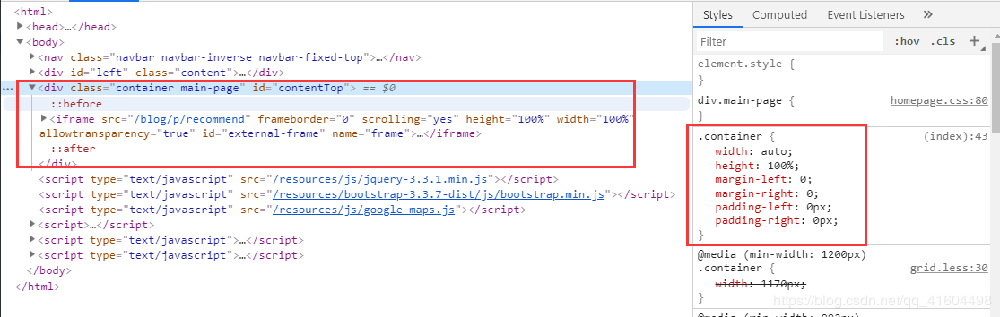

在做博客项目的时候，使用了iframe，方便根据选择的文章类别切换显示的内容，但是文章一般都有很多，通过bootstrap的媒体列表的方式显示的话，iframe是一定会出现滚动条的，特别是我添加了一个“滚动条触底之后动态加载更多的文章”的功能。这样页面上就会有两个滚动条，特别奇怪。
在网上学习了一些之后，我把iframe的滚动条隐藏了（不是将iframe的scrolling属性改为scrolling=“no”），而是通过css将其在视觉上隐藏起来（下面有代码），这样就可以只出现一个滚动条，但是这样的话，文章确实一直在动态加载，但是浏览器的滚动条却一直没有动，感觉也很奇怪~
最后
我决定把浏览器的滚动条隐藏，iframe的滚动条放出来，并且通过对iframe和承载它的div做了一些css上的调整，让iframe滚动条“充当”了浏览器的滚动条。图片中箭头指向的滚动条实际上是iframe的
css：对homepage的滚动条隐藏：
/*在视觉上将iframe的滚动条隐藏*/
/*主要是将width置为0px*/
::-webkit-scrollbar {
width: 0px;
height: 5px;
}
/*下面的css定义可以不写，如果width不是0px的时候，通过下面的css定义可以自定义其他样式的滚动条*/
::-webkit-scrollbar-thumb{
background-color: transparent;
-webkit-border-radius: 5px;
border-radius: 5px;
}
::-webkit-scrollbar-thumb:vertical:hover{
background-color: transparent;
}
::-webkit-scrollbar-thumb:vertical:active{
background-color: transparent;
}
::-webkit-scrollbar-button{
display: none;
}
::-webkit-scrollbar-track{
background-color: transparent;
}对承载iframe的div和iframe,一定要充满整个浏览器可视页面，如果有footer和nav的话，也要在右侧给滚动条留出大概15px的宽度，不然就不像浏览器滚动条了
<div class="container main-page" >
<iframe src="/blog/p/recommend" frameborder="0" scrolling="yes" height="100%" width="100%" allowtransparency="true" id="external-frame" name="frame">
</iframe>
</div>
文章转自：https://blog.csdn.net/qq_41604498/article/details/99735882
反正都是自己的博客~~